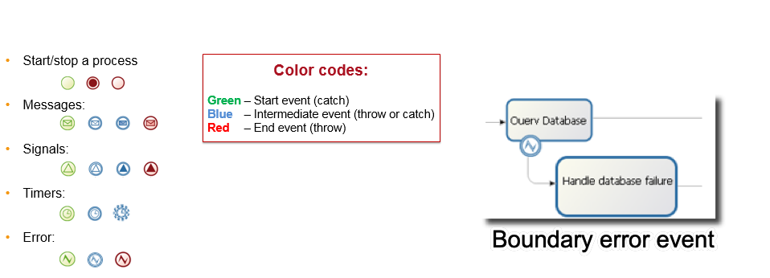

Día #2
Thalía Cruz
Programa - recordatorio
Día #1 - Crear una primera aplicación
- La solución Bonita y sus componentes
- Empezar un proyecto con Bonita
- Introducción a BPMN 2.0
- Introducción a la gestión de datos
- Interfaz de usuario (Formularios)
- Organización, actores y permisos
- Conectores
- Introducción a las aplicaciones
Programa
Día #2 - Para ir más allá en el desarrollo con Bonita
- Arquitectura de la plataforma Bonita
- Diseño y automatización de procesos
- Gestión de datos
- Extensiones
- Interfaz de usuarios
- Despliegue
Arquitectura 3-Tier
Ayuda a separar las capas de proceso, datos e interfaz de usuario

Bonita Runtime
Disponible en las instalaciones "on premise" o en la nube
Tomcat + aplicaciones Bonita + Motor Bonita + Base de datos
Paquete Tomcat o imagen Docker para simplificar la instalación del servidor
Bonita Runtime

API del motor Bonita
- Forma única de comunicarse con el motor de Bonita (JAVA)
- Edición Community: los paquetes empiezan con org.*
- Se usa con
- Groovy scripts
- Connectores
- Extensiones de la Api REST
- Cliente java externo para comunicarse con el motor
APIs del motor más utilizadas
- Login API: acceso al motor Bonita
- ProcessAPI: acciones ligadas con el proceso
- IdentityAPI: gestión de la organización (usuarios, grupos, roles)
Documentación: Bonita Engine architecture
API REST Bonita
- Operaciones en Bonita Engine desde un lenguaje distinto a JAVA o en una aplicación web en combinación con Ajax
- Muchas APIs disponibles (bpm, bdm, identity, system...)
- 4 operaciones: GET, POST, PUT, DELETE
- incluye al BDM REST Access Control (Enterprise)
API REST BDM: uso
Recuperar información sobre un objeto, su estructura, sus datos
/!\ la API REST proporciona acceso a los datos, no a su adición o actualización /!\
Composición de proyecto en Bonita Studio
Un proyecto Bonita es un proyecto  con:
con:
- Nombre, versión, descripción
- Maven IDs : groupID, artifactID
Los proyectos se integran en un workspace local o remoto
Recuperación automática de dependencias
Colaboración en el proyecto
Los proyectos se pueden compartir mediante SVN o Git desde Bonita Studio
Automatizar los procesos: eventos
Ocurren a lo largo del proceso
Asincronos 
Evento de borde: desencadena un camino alternativo
Actividades de llamada y sub-procesos
Activa un subproceso.
Proceso padre puesto en espera

Actividades de llamada y sub-procesos
Mapeo de datos
Iteraciones
3 tipos de iteraciones:
- Bucle estándar
- Multi-instanciación paralela
- Multi-instanciación secuencial

Ejercicio 7
Añadir un temporizador a un proceso
Ciclo de vida de los datos de negocio
Desarrollar con el modelo de datos de negocio
- Relaciones : composición y agregación
- Restricciones únicas
- Consultas: por defecto o personalizadas
- Índices
- Accesible mediante la API REST
/!\ Nunca hay que leer o escribir directamente desde la base de datos BDM /!\
Persistencia gestionada por el motor Bonita a través de las bibliotecas Hibernate y la base de datos
Desarrollar con el modelo de datos de negocio
- 2 formas de cargar los datos: eager o lazy
 |  |
API/bdm/businessData/com.training.model.Employee/{persistenceId}
Restricciones del contrato
Restricciones = reglas específicas para la validación de los valores de los datos esperados
Definidas con Groovy scripts
El ejemplo de los datos del formulario
- Almacena y procesa los datos mostrados y actualizados en las interfaces de usuario
- Accesibles en el navegador del usuario
- Puede ser cualquier tipo de objeto JavaScript
- Inicializado y actualizado por: entradas del usuario, llamadas a la API REST, código JavaScript
- No hay persistencia
Vista global de la arquitectura
Envío de datos del formulario a la variable de negocio

Otro tipo de datos: documentos
- Bonita proporciona un sistema de gestión de documentos simple
- Las referencias a documentos hacen parte de la definición del proceso
- En tiempo de ejecución los documentos se pueden inicializar, actualizar ...
- A diferencia de la BDM, los documentos están asociados con una instancia de proceso determinada
Ejercicio 8
Agregar restricciones a un contrato
Extensiones en Bonita
Permite adaptar el proyecto a sus necesidades integrando, entre otros:
 Connectores
Connectores  Filtros de actores
Filtros de actores  Temas personalizados
Temas personalizados  Extensiones de la API REST
Extensiones de la API REST
Extensiones en Bonita
Gestor de extensiones de Bonita Studio para centralizarlos y utilizarlos

Extensiones en Bonita
Recupera las extensiones de 3 maneras:
|
 |
Desarrollar una extensión
Uso de los arquetipos Maven (plantillas)
Desarrollado en su IDE
Almacenados en local o en repositorios remotos:
- Repositorio Maven privado o público
- Paquetes GitHub
Especificidades de las extensiones de la API REST
Creado en su IDE e importado en el gestor de extensiones de Bonita, o desarrollado desde Bonita Studio
 |
 |
Ejemplo de extensión: el filtro de actores
Reemplaza completamente al actor
Produce una lista de usuarios basada en información de entrada y lógica interna
Se ejecuta cuando la ejecución del proceso alcanza la etapa asociada con el filtro de actor
Puede actualizarse usando API
Actores vs filtros de actores
| Beneficios | Limitaciones | |
|---|---|---|
| Actor | Siempre actualizado con la organización | Asociación que no puede basarse en datos de negocio |
| Filtro de actor | Asociación que puede incluir datos de negocio | Calculado al crear instancias de una etapa |
Ejercicio 9
Agrega un filtro de actor
Estructura de la interfaz de usuario
- Formularios, páginas y fragmentos : estructura
- Contenedores y widgets : contenido
- Variables, propiedades y activos : comportamiento
Páginas
Construida de la misma manera que los formularios
Diferencia principal en el contexto de ejecución:
- Los formularios tienen información sobre la definición del proceso o sobre la instancia del proceso y la tarea
- Las páginas no tienen información de contexto
Las páginas pueden obtener información del BDM o de los procesos o activar acciones a través de las API REST
Agrupar varias páginas y un menú para crear una aplicación
Contenedores y widgets
Un conjunto de widgets y contenedores disponibles out-of-the-box
Contenedores utilizados para agrupar los widgets o su comportamiento
Se pueden crear widgets personalizados con el UI Designer
También se pueden reutilizar las contribuciones compartidas en la web de la comunidad
Fragmentos
Claves para la reutilización y el ahorro de tiempo
Pieza de elemento compuesta por widgets y/o contenedores
O bien tiene su propia configuración y datos...
O bien expone los datos en las páginas que los incluyen...
Interfaces entre los recursos de la aplicación
Ejercicio 10
Mejorar la aplicación
Implementación de procesos
Pasos principales para implementar un proceso:
| 1. Configuración del proceso 2. Generación del fichero .bar |
Studio |
| 3. Despliegue del fichero .bar 4. Configuración del proceso 5. Activación del proceso |
Runtime - Admin app |
Despliegue de aplicaciones
2 tipos de despliegue de aplicaciones
- Despliegue para pruebas en un entorno LOCAL desde Bonita Studio
- Despliegue en un entorno de DESARROLLO o PRODUCCIÓN desde la aplicación Bonita administrador
Pasos de despliegue en el servidor
Organization y luego perfiles
Pasos de despliegue en el servidor
Extensiones de la API y luego páginas, layout, temas

Pasos de despliegue en el servidor
Business data model y luego procesos

Pasos de despliegue en el servidor
Definición de la aplicación

Gracias por tu atención
¿Alguna pregunta?
No dudes en preguntarles primero en el servidor dedicado de Discord # bonita-camp-español ,
y luego haz tus preguntas sobre nuestra comunidad Bonitasoft.
Recursos adicionales:
- Documentación - documentation.bonitasoft.com
- Sitio web Bonitasoft - fr.bonitasoft.com
- Communidad - community.bonitasoft.com
- GitHub - github.com/bonitasoft-community